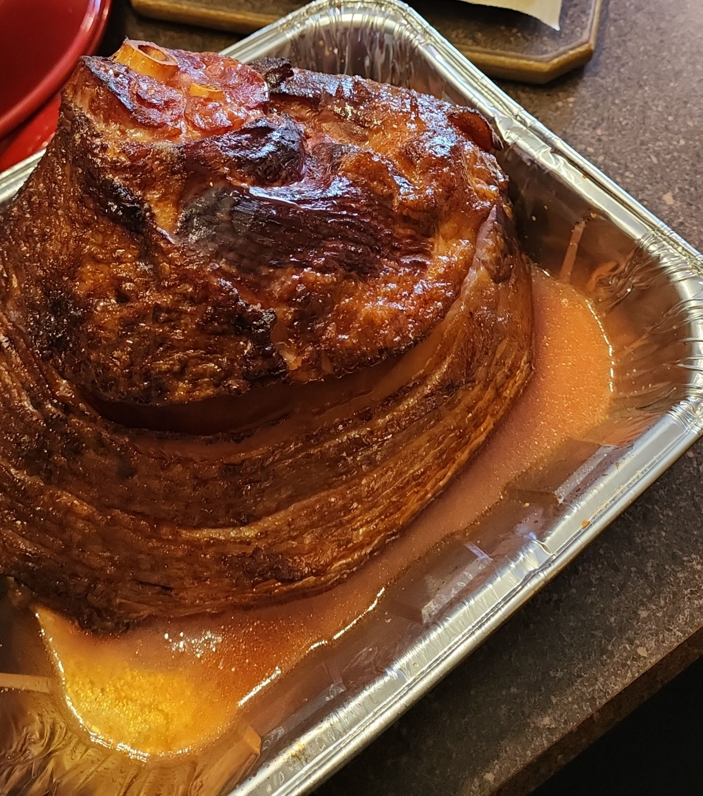

Double Smoked Ham
Here is my holiday favorite "Double Smoked Ham" with candied jalapeno glaze (you can use maple syrup or your favorite glaze instead)!
Ingredients
- Pre-cooked spiral ham
- Favorite AP and BBQ seasoning
- Candied jalapeno syrup (maple syrup or favorite glaze)
Instructions
- Take out ham and place in a baking dish. I use foil ones. And cover with both AP and BBQ seasoning. Let sit.
- Prepare smoker to 250°F - 275°F
- Add favorite wood, chips, or pellets. I use a blend of maple and cherry woods.
- Place ham in smoker and allow it to heat through. Usually around 3 hours.
- Around the 2½ hour mark, prepare glaze.
- Once ham is warm all the way through, add glaze and resume smoking for 30 to 45 minutes
- Remove ham. Let rest for 15 minutes.
- Slice and serve